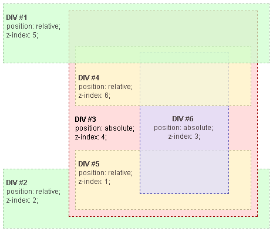

Модель отображения
Часть II
Алёна Шинкарева
Designed by Олег Мохов
Позиционирование элементов
Position
– устанавливает способ позиционирования элемента относительно окна браузера или других объектов на веб-странице.
Position: relative
– положение бокса вычисляется относительно позиции, которую блок занимал бы в нормальном потоке.
– для задания смещения используются свойства top | right | bottom | left.
div { position: relative; }
.top { top: 10px; }
.right { right: 10px; }
.bottom { bottom: 10px; }
.left { left: 10px; }
.bottom-right { bottom: 10px; right: 10px; }
.top-left { top: 10px; left: 10px; }div {position: relative;}
.top { top: -10px; }
.right { right: -10px; }
.bottom { bottom: -10px; }
.left { left: -10px; }
.bottom-right { bottom: -10px; right: -10px; }
.top-left { top: -10px; left: -10px; }.box1 {
top: -20px;
bottom: -20px;
}
.box2 {
top: 20px;
bottom: 20px;
}div {
right: -20px;
left: -20px;
}.parent {
direction: rtl;
}
.rtl,
.ltr {
right: -20px;
left: -20px;
}Содержащий блок
– прямоугольник, относительно которого считаются позиция и размеры бокса элементов.
- Для корневых элементов – это прямоугольник размерами с вьюпорт
- Для элементов position: static – это границы контента ближайшего предка блочного уровня
- Относительно спозиционированный блок создаёт новый содержащий блок
Position
При таком позиционировании блок выводится из потока, при этом сам блок образует новый содержащий блок.
- Содержащим блоком является ближайший предок c position: relative | absolute | fixed
- inline, inline-block, table-... -> block
- У абсолютно спозиционированных элементов не схлапываются внешние отступы
Позиционируется относительно первого предка, у которого position ≠ static (содержащий блок). Если такого нет – позиционируется относительно корневого элемента.
.box {
position: absolute;
top: 0;
left: 0
}Позиционируется относительно первого предка, у которого position ≠ static (содержащий блок). Если такого нет – позиционируется относительно корневого элемента.
.wrap {
position: relative;
}
.box {
position: absolute;
top: 0;
left: 0
}.box1 {
position: absolute;
right: 0;
bottom: 0;
}
.box2 {
position: absolute;
top: 0;
left: 0;
}.box1 {
position: absolute;
top: 10px;
right: 20px;
bottom: 30px;
left: 40px;
}Можно задавать значения в %. Раccчитываются относительно размеров содержащего блока.
.box1 { position: absolute;
top: 0;
right: 50%;
bottom: 50%;
left: 0;
}
.box2 { position: absolute;
top: 50%;
right: 0;
bottom: 0;
left: 50%;
}Position
Содержащий блок у fixed элементов – это всегда вьюпорт. Во всех случаях.
wrapper
fixed
.fixed {
position: fixed;
width: 50%;
top: 100px;
left: 100px;
}Position
Элемент отображается как относительно спозиционированный до тех пор, пока не пересечёт специальную границу и тогда он ведёт себя как position fixed.
- A
- Andrew W.K.
- Apparat
- B
- Battle
- ...
.dt {
position: sticky;
top: 0;
}Наложения элементов
Z-ось
Если элементы находятся в равных условиях – элемент, который находится ниже в потоке, будет выше по оси Z.
box1
box2
box3
.box2, .box3 {
margin-top: -20px;
}z-index
Каждый элемент может находиться как ниже, так и выше других объектов веб-страницы, их размещением по z-оси и управляет z-index.
.box {
position: relative; /*absolute | fixed | sticky*/
/*z-index: n; где n ∈ Z | auto*/
z-index: 1;
}
Про z-index
Контекст наложения
Элементы с общими родителями, перемещающиеся на передний или задний план вместе, известны как контекст наложения.
Условия создания контекста наложения:
- Если элемент – корневой элемент документа (html)
- Если элемент позиционирован не статически и его значение z-index не равно auto
- Если элемент имеет прозрачность менее 1
- Если элемент имеет transform со значением, отличным от none
- Если элемент имеет mix-blend-mode со значением, отличным от "normal"
- Если элемент имеет filter со значением, отличным от "none"
- Если элемент имеет isolation, установленный в "isolate"
Нельзя расположить элемент из одного контекста наложения между элементами другого контекста
Порядок наложения
- Background и border элемента, который создаёт контекст наложения
- Позиционированный элемент (и его дети) с z-index < 0 *
- Элементы блочного уровня в нормальном потоке
- Плавающие элементы
- Элементы inline уровня
- Позиционированный элемент (и их потомки) с z-index = 0 или auto. opacity < 1 *
- Позиционированный элемент (и их потомки) с z-index > 0 *
red box
green box text!
blue boxbox
text!
red
green
blue.red {
position: relative;
z-index: auto;
}- Background и border элемента, который создаёт контекст наложения
- Позиционированный элемент (и его дети) с z-index < 0.
- Элементы блочного уровня в нормальном потоке
- Плавающие элементы
- Элементы inline уровня
- Позиционированный элемент (и их потомки) с z-index = 0 или auto. opacity < 1
- Позиционированный элемент (и их потомки) с z-index > 0
red
green
blue.red {
opacity: .99;
}- Background и border элемента, который создаёт контекст наложения
- Позиционированный элемент (и его дети) с z-index < 0.
- Элементы блочного уровня в нормальном потоке
- Плавающие элементы
- Элементы inline уровня
- Позиционированный элемент (и их потомки) с z-index = 0 или auto. opacity < 1
- Позиционированный элемент (и их потомки) с z-index > 0
red
green
blue.red { position: relative;
z-index: 0;
}
.green { position: relative;
z-index: 1;
}z-index: 0;
z-index: 1;
- Background и border элемента, который создаёт контекст наложения
- Позиционированный элемент (и его дети) с z-index < 0.
- Элементы блочного уровня в нормальном потоке
- Плавающие элементы
- Элементы inline уровня
- Позиционированный элемент (и их потомки) с z-index = 0 или auto. opacity < 1
- Позиционированный элемент (и их потомки) с z-index > 0
red
green
blue.red {
position: relative;
z-index: 0;
}
.green {
position: relative;
z-index: -1;
}z-index: 0;
z-index: -1;
- Background и border элемента, который создаёт контекст наложения
- Позиционированный элемент и его дети) с z-index < 0.
- Элементы блочного уровня в нормальном потоке
- Плавающие элементы
- Элементы inline уровня
- Позиционированный элемент (и их потомки) с z-index = 0 или auto. opacity < 1
- Позиционированный элемент (и их потомки) с z-index > 0
red
green
blue.wrap { opacity: 0.99; }
.red {
position: relative;
z-index: 999;
}
.green {
position: relative;
z-index: 0;
}
z-index: 999;
z-index: 0;
- Background и border элемента, который создаёт контекст наложения
- Позиционированный элемент (и его дети) с z-index < 0.
- Элементы блочного уровня в нормальном потоке
- Плавающие элементы
- Элементы inline уровня
- Позиционированный элемент (и их потомки) с z-index = 0 или auto. opacity < 1
- Позиционированный элемент (и их потомки) с z-index > 0
red
green
blue.red {
position: relative;
z-index: 999;
}
.green {
position: relative;
z-index: -999;
}
z-index: 999;
z-index: -999;
- Background и border элемента, который создаёт контекст наложения
- Позиционированный элемент (и его дети) с z-index < 0.
- Элементы блочного уровня в нормальном потоке
- Плавающие элементы
- Элементы inline уровня
- Позиционированный элемент (и их потомки) с z-index = 0 или auto. opacity < 1
- Позиционированный элемент (и их потомки) с z-index > 0
z-index hell

Группировка z-index
- 1000–1999 – шапка
- 2000–2999 – диалоговые окна
- 3000–3999 – попапы
- 4000–4999 – suggests
Плавающие элементы
Свойство float
.box {
/*float: left | right | none*/
float: left;
}
- Элемент вынимается из потока и сдвигается влево (для left) или вправо (для right) до того как коснётся либо границы родителя, либо другого элемента с float
- inline элементы «знают» о float и обтекают элемент по сторонам
- Создают блочный контекст форматирования
- Ширина float блока определяется по содержимому
- Вертикальные отступы margin элементов с float не сливаются с отступами соседей
float-left
Текст или inline-элементы
float-right
Текст или
inline-элементы
.float-left {
float: left;
}
.float-right {
float: right;
}Inline элементы избегают float элементы
float-left
Текст или inline-элементы
float-right
Текст или
inline-элементы
.float-left {
float: left;
}
.float-right {
float: right;
}Блоки игнорируют float элементы
Отступы не схлапываются
margin-right: 20px;
margin: 20px;
Cвойство clear
.box {
/*clear: left | right | both*/
clear: left;
}Применение этого свойства сдвигает элемент вниз до тех пор, пока не закончатся float'ы слева/справа/с обеих сторон.
clear: left
.wrapper {
clear: left;
}clear: right
.wrapper {
clear: right;
}clear: both
.wrapper {
clear: both;
}Блочный контекст форматирования
Блочный контекст форматирования
– это регион страницы, в котором блоки размещаются в привычном для блоков порядке. Элементы из разных блочных контекстов форматирования никак не могут повлиять на положение друг друга на странице.
- float элементы;
- position: absolute | fixed;
- display: inline-block | table-cell | table-captions (не блочные элементы);
- блочные элементы c overflow: hidden | auto;
- display: flow-root;
- display: flex;
- display: grid;
- contain: layout | content | strict;
.wrapper1 {
overflow: hidden;
}.wrapper2 {
overflow: hidden;
}float: left;
box
.box {
overflow: hidden;
}Что будет?
float: left;
float: left;
Меняем порядок
b1
b2
b3
b4
div { float: right }Трехколоночный макет
left
right
center.left { float: left }
.right { float: right }
.center { overflow: hidden }
body { width: 50% }